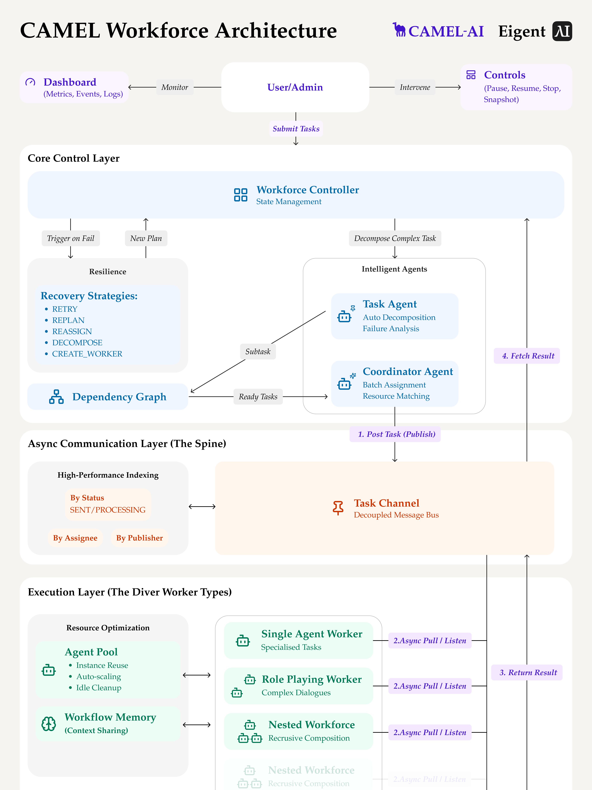

谁调度谁，
谁把什么交给谁。
这次按控制关系、信息传递、反馈循环筛选。主参考是 ChatDev 2.0；AgentScope 补充实际成员消息，Eigent 补充调度与消息通道的架构表达。
以下三个项目约有 1.55 万至 3.45 万 GitHub 星标。本轮未找到同时完整展示编排、逐条消息和共享上下文交接的现成高星标界面；每个参考的覆盖范围在下方明确标出。
ChatDev 2.0 / DevAll
★ 34,513并行的 Article Writer 与 Poet 汇合到 Editor 1，之后进入人工检查与修改回路。条件直接挂在连接线上，因此能读懂何时继续、何时退回。

分叉、汇合、条件与循环；源码用灰色虚线区分 trigger=false 的仅传数据边。控制顺序与上下文传递可以分开表达。
连线首先表示配置的关系。图上边的动画不能直接解读成「一条消息刚刚送达」；实际输出与上下文仍需要结合运行视图查看。
查看运行界面：节点状态与 Chat / Graph 切换

AgentScope 2.0 · Agent Team
★ 33,227Leader 创建与协调 Worker；每个成员有独立会话和事件流。TeamSay 支持向成员发送消息或广播，前端可查看各成员的工作与通信。

能追踪谁建立团队、给成员派了什么任务，以及成员如何通过消息汇报结果。适合为选中的角色或连接展示通信证据。
TeamPanel 是成员列表与会话切换，没有把全局通信画成箭头网络。此处的星标属于含示例 Web UI 的 AgentScope 主仓库；不是旧的独立 Studio。
Eigent / CAMEL Workforce
★ 15,532这张纵向架构图直接画出「规划与调度 → 共享 Task Channel → Worker」，以及结果回传、依赖就绪和失败后的重新规划。它是架构图，不能当作已有运行界面的截图。

箭头有明确动词：发布任务、监听领取、返回结果、获取结果。共享通道、依赖图和上下文各自有位置，能解释协作如何运作。
这是系统设计层的关系，无法告诉我们某轮实际发过哪些消息。Eigent 的公开运行截图主要显示成员、进度和执行内容。
让连接线有确切的含义。
主图可以采用纵向角色泳道：时间往下走，跨角色的箭头表示真实交接；编排规则与实际消息分别显示。
- 任务分派总管 → 研究员：明确任务名称、任务编号和启动原因。
- 实际通信研究员 → 实现者：显示消息摘要与时间，点击箭头展开原文及收件方。
- 上下文与产物显示共享因子库、数据切片与实验结果；引用产物不自动等于向另一个 Agent 发送消息。
- 反馈与汇合评审 → 实现者：标注退回原因；并行分支汇合处明确在等待哪些结果。
当前最有用的组合：ChatDev 的控制与数据边 + AgentScope 的真实成员消息 + Eigent 的调度 / 通道 / Worker 分层。